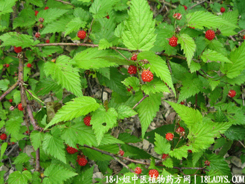

(本文解释权归中药材天地网兄弟站-18小姐中医植物药方网所有,如需转载请注明出处)
蛇泡簕(中药材植物名:茅莓)(植物科目:蔷薇科)

别名：蛇喷泡簕、饭盖簕、水泡簕。
植物名：茅莓。
生长环境：本品为扳援状灌木，南部各处山野间产之。
分布：我国南部、越南、日本及琉球群岛。
入药部分：根。
采集期：全年有产、秋季最宜。
自采地点：山岗、荒地。
性味：性凉快、、味微苦。
功能：去骨火。
主治、用量和用法：1、癍痧热症：干根1至2两、清水煎服；2、疴血：干根1两至2两半、猪瘦肉适量，清水煎服；3、牙痛：干根5钱至1两，清水煎服；4、骨痛：干根1至2两，清水煎服；5、眼热：干根5钱至1两、清水煎服。
验方1：（治骨火痛方）蛇泡簕1两、凉粉草5钱、茅根1两、三桠苦1两，清水四碗，煎成一碗服。
（方解）本方蛇泡簕、三桠苦味苦性凉，苦能燥湿，凉能清热；凉粉草、茅根清热利湿；湿去热解，骨火自灭。
（方歌）骨火为患湿为因，燥湿清热法可行，桠苦茅根蛇泡簕，凉粉草入显功能。
验方2：（治癍痧热症方）蛇泡簕5钱、大头陈5钱、路兜簕5钱、山芝麻5钱、清水三碗、煎成一碗服。
（方解）癍痧热症来自外感，大头陈疏风解表，；路兜簕、蛇泡簕清热；加以山芝麻清胃而滑肠；表里双解，邪自不留。
（方歌）时行厉毒出癍痧，蛇泡簕伴山芝麻，大头陈伴路兜簕，双解表里法堪夸。
(本文解释权归中药材天地网兄弟站-18小姐中医植物药方网所有,如需转载请注明出处)